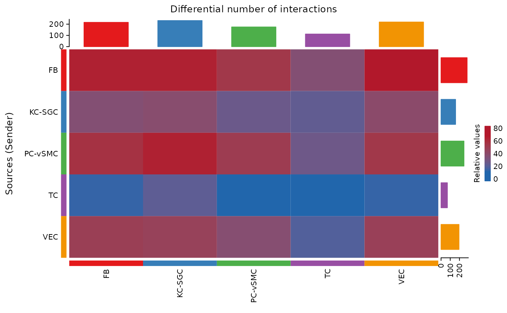

Run imputation on the single-cell data, using the bulk data for supervision.
seur=run_durian(
scrabble_parameters = c(1,1e-6,1e-4),
nEM = 5,
seur = seur,
bulkdata = B,
deconv_method = "MuSiC",
nIter_outer = 10,
nIter_inner = 10,
nSDCIters = 500000,
DECONVGENETHRESH=-0.01,
SCRGENETHRESH=-0.01,
outerStats = FALSE,
durianEps=1e-3,
saveImputationLog = FALSE,
saveDeconvolutionLog = FALSE,
saveImputedStep=FALSE)
dim(seur)
seurConstruct the CellChat Object
Comparing two datasets in CellChat requires unique names for each
cell. Thus, the label of each Seurat assay (RNA and
IMPUTED) is prepended to the cell ID during creation of the
individual CellChat objects, prior to merging them.
For full documentation on the CellChat-specific steps below, please refer to the corresponding CellChat tutorial.
library(CellChat)
# CellChat Raw Object
CellChatDB = CellChatDB.human
data = normalizeData(as.matrix(GetAssayData(seur,assay="RNA",slot = "counts")))
colnames(data) = paste0("RNA.",colnames(data))
meta = seur@meta.data[,c("cellType","sampleID")]
rownames(meta) = colnames(data)
meta$sampleID = colnames(data)
cellchat <- createCellChat(object = data, meta = meta, group.by = "cellType")
cellchat@DB <- CellChatDB
# Raw Object Processing
cellchat <- subsetData(cellchat)
cellchat <- identifyOverExpressedGenes(cellchat)
cellchat <- identifyOverExpressedInteractions(cellchat)
# Raw Object Individual Probs
cellchat <- computeCommunProb(cellchat,raw.use = TRUE)
cellchat <- computeCommunProbPathway(cellchat)
cellchat <- aggregateNet(cellchat)
cellchat <- netAnalysis_computeCentrality(cellchat, slot.name = "netP")
# CellChat Imputed Object
data = normalizeData(as.matrix(GetAssayData(seur,assay="IMPUTED",slot = "counts")))
colnames(data) = paste0("IMPUTED.",colnames(data))
meta = seur@meta.data[,c("cellType","sampleID")]
rownames(meta) = colnames(data)
meta$sampleID = colnames(data)
cellchat_imputed <- createCellChat(object = data, meta = meta, group.by = "cellType")
cellchat_imputed@DB <- CellChatDB
# Imputed Object Processing
cellchat_imputed <- subsetData(cellchat_imputed)
cellchat_imputed <- identifyOverExpressedGenes(cellchat_imputed)
cellchat_imputed <- identifyOverExpressedInteractions(cellchat_imputed)
# Imputed Object Individual Probs
cellchat_imputed <- computeCommunProb(cellchat_imputed,raw.use = TRUE)
cellchat_imputed <- computeCommunProbPathway(cellchat_imputed)
cellchat_imputed <- aggregateNet(cellchat_imputed)
cellchat_imputed <- netAnalysis_computeCentrality(cellchat_imputed, slot.name = "netP")
cellchats_list = list()
cellchats_list[["orig"]] = cellchat
cellchats_list[["imputed"]] = cellchat_imputed
merged = mergeCellChat(cellchats_list, add.names = names(cellchats_list),cell.prefix=TRUE)The Impact of Imputation on Number of Interactions Between Cell Types
The impact of imputation is generally data-dependent and asymmetric across pathways. Changes in the number of interactions between cell types shows that dropout is also cell type specific.
For full documentation on the CellChat-specific steps below, please refer to the corresponding CellChat tutorial.
netVisual_heatmap(merged)
#> Do heatmap based on a merged object